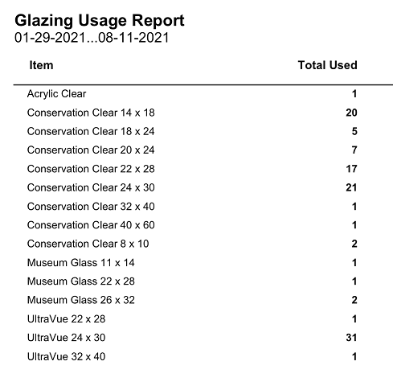

Glazing Usage Report
The Glass Usage report shows totals by Glass type, size, and quantity used for any time period. This report can be used to help determine which glass sizes are most cost effective to have available and which ones can be purchased in bulk.
-
Glass sizes in the report are based on the dimensions entered on the work order and the sizes listed in your Default Glass Size chart. See also: Set up Glass Sizes
-
The sizes in the chart can be edited and are used for all glass types. This chart is also used to determine the Suggested Glass Size which appears on the Work Order screen in green type above the Frame1 field.
-
Estimates are not included in this report.
-
Work Orders on Hold (radio button) are included.
Example Print Preview

How to Print a Glass Usage Report
-
Go to your Work Orders file.
-
In the menu bar, click Reports and choose Glass Usage.
Note: If Reports is not visible, then re-login as level3. -
Enter a date range for your report into the Date field, e.g. 1/1/2019…6/30/2019 or 12/2019 (for December 2019).
-
Click the Proceed button.
-
A print preview of the document appears.
Depending on the date range, the preview may take time to generate. -
Click Continue.
The print dialog box appears. -
Click Print or Cancel.
Caution: when used with a large date range this report may take time to generate.
Glass Usage Report for Found Set
Alternatively, if you have already created a Found Set (by performing a find for specific criteria), then you can follow these steps:
-
Go to your Work Orders file and perform a Find for the Work Orders you need.
-
Click the Print Documents sidebar button.
-
The print documents window appears.
In the lower left, confirm that the size of the Found Set matches your earlier search (otherwise the following action will be applied to all records). -
Click the Glazing Usage button.
-
A print preview of the document appears.
Depending on the size of the Found Set, the preview may take time to generate. -
Click Continue.
The print dialog box appears. -
Click Print or Cancel.
Caution: when used with a large Found Set this report may take time to generate.
Glass Usage Export to Excel
There is no report available to automatically provide the information on the glass sizes and quantities used when the Glass items in the Price Codes file have only one listing for all sizes. However, the information is in FrameReady and here is how you can extract it. Although it is not ideal, it is a start.
-
On the Main Menu, in the file menubar, click Perform and choose Restore Full Menus.

-
Perform a find in the Work Order file with the * (asterisk) in the Glass field to find all Work Orders with an entry in that field.
You can also add a date range or any other criteria, e.g. complete, incomplete, oversize, etc. -
Click Perform Find to see the list.
-
In the list view screen, click the Sort button; the Sort Records dialog box appears.
-
In the Sort Records dialog box, click the Clear All button to remove the entries under Sort Order on the right side.
Click on Current Layout (List View) and select Current Table (Wrk_Ordr).
Now, from the list below, select Glass and move it to the Sort Order Box. Then select Glass Size and move it to the Sort Order Box. Click Sort. -
In the menu bar, click File and chose Export Records…
You must be in level4 and have clicked Perform > Restore Full Menus in order to see Export Records. -
Save the file as an Excel Workbook or .xls file.
-
Click Continue in the Excel Options dialog box.
-
In the Specify Field Order for Export dialog box, click Clear All and move only: Glass, Quantity and Glass Size to the Field Export Order list.
Once again, you will need to change from Current Layout (List View) and select Current Table (Wrk_Ordr) in order to see the correct list. (If for some reason there were other fields you wanted to export you could.) -
A message appears: "This export type does not support repeating fields. Only the first item from each repeating field will be exported." Click OK.
This means that if a glass item was listed in the second field, then that information will not be exported. The file will be save to the location you specified early. -
Open the Excel file and calculate the quantity for each size of each glass type.
© 2023 Adatasol, Inc.